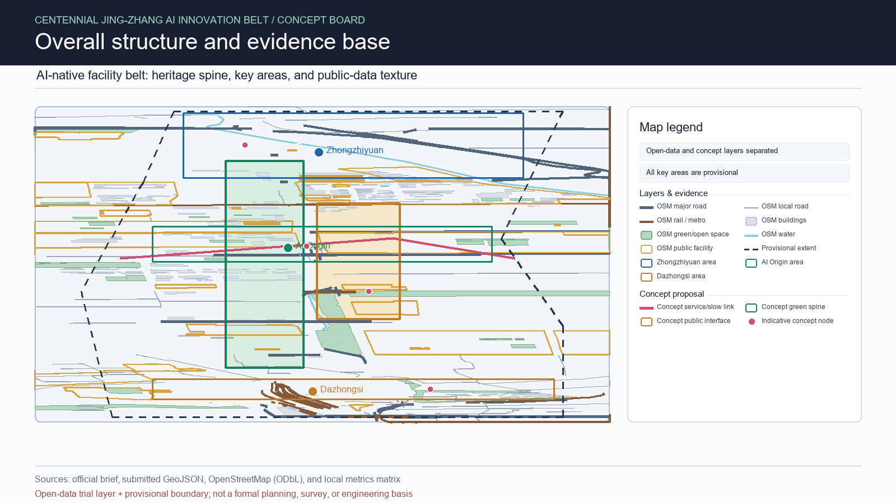
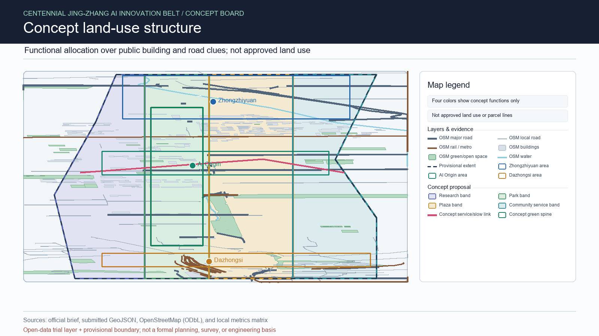
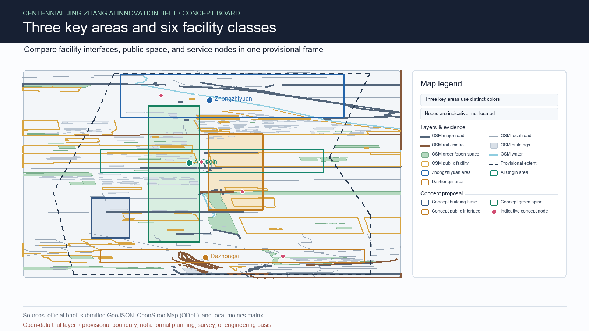
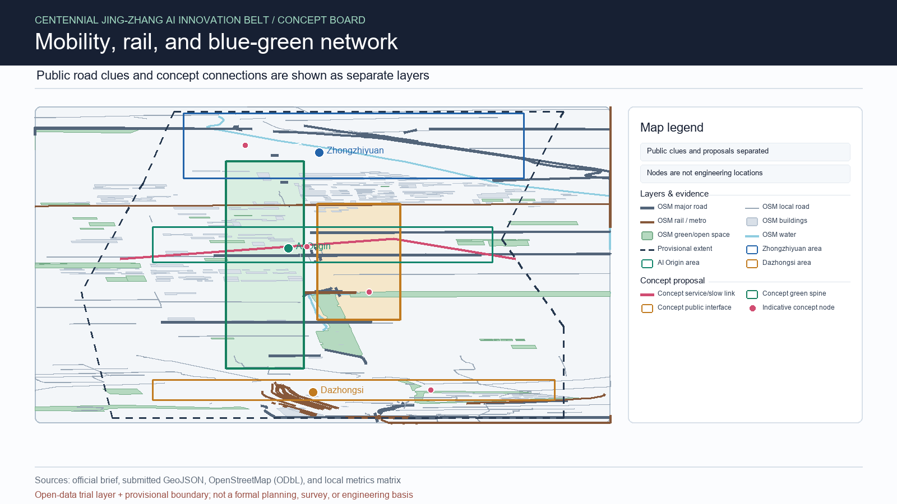
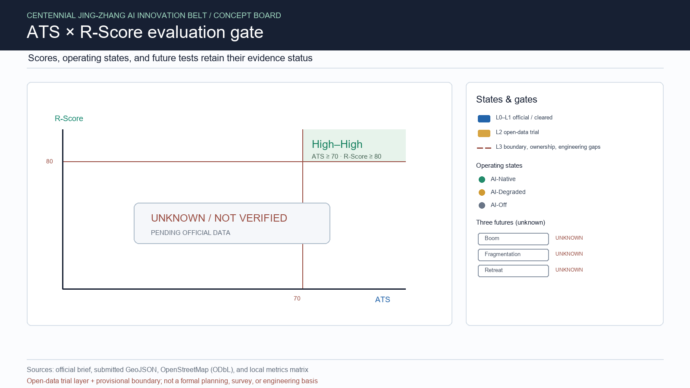

Jing-Zhang AI-Native Reversible Facility Belt
Offline English concept viewer. AI is treated as a physical urban user; ordinary services remain after AI withdrawal.
Provisional geometry only. Official boundary, redlines, ownership, utilities and engineering conditions remain open data gaps.
Core concept figures
Five figures are deterministically derived from the same submitted GeoJSON, OSM trial layer, and metric states.





Facility protocol
- Six classes: road/intersection, curb loading, building entrance, park public space, municipal logistics, energy/edge node.
- Each record answers Who, B0, why change, physical change, compatibility, three states, Second Life, ATS, R-Score and three futures.
- ATS and R-Score are project-defined v0.1 measures. Unknown values cannot enter High-High.
Three states and three futures
AI-Native, AI-Degraded and AI-Off preserve a documented basic service floor. Boom, Fragmentation and Retreat tests are recorded in the shared facility matrix and remain unknown until evidence and independent review exist.
Evidence
Authoritative records: metrics.json, assumptions.json, GeoJSON, and visual/assets/ai-native-facility-matrix.json. This page is static and loads no remote resources.